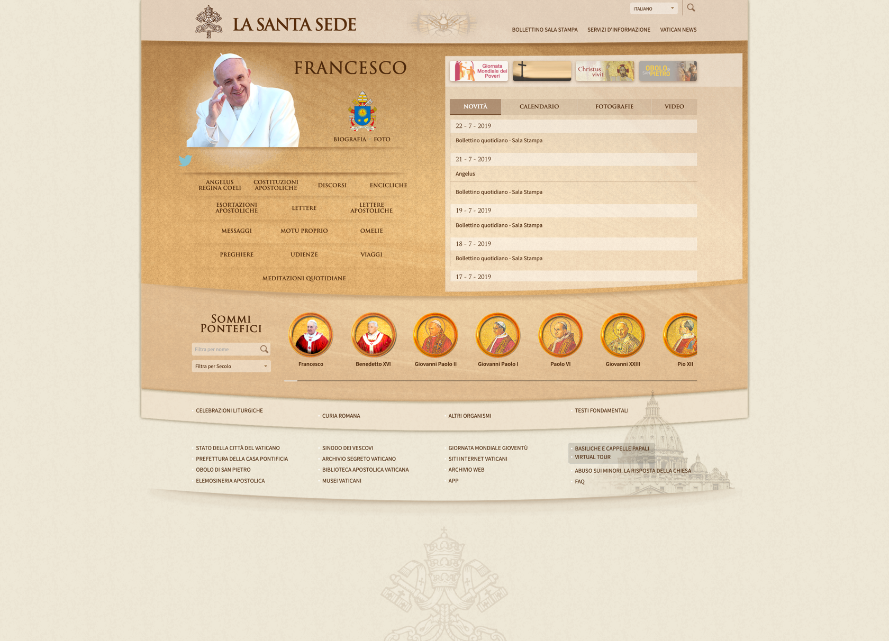
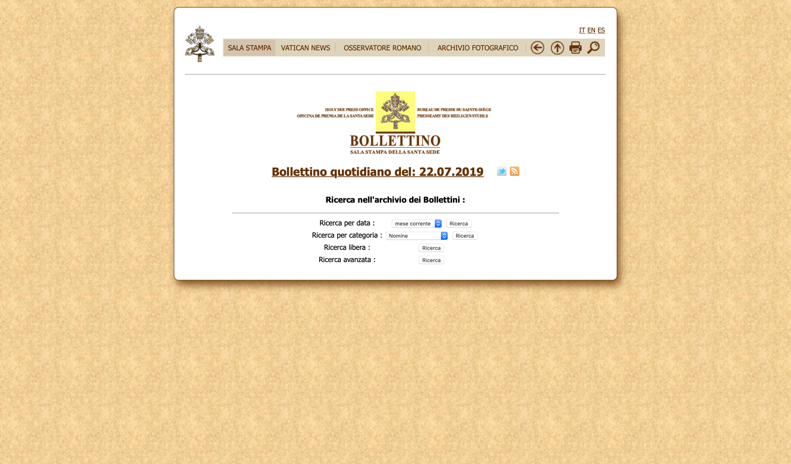
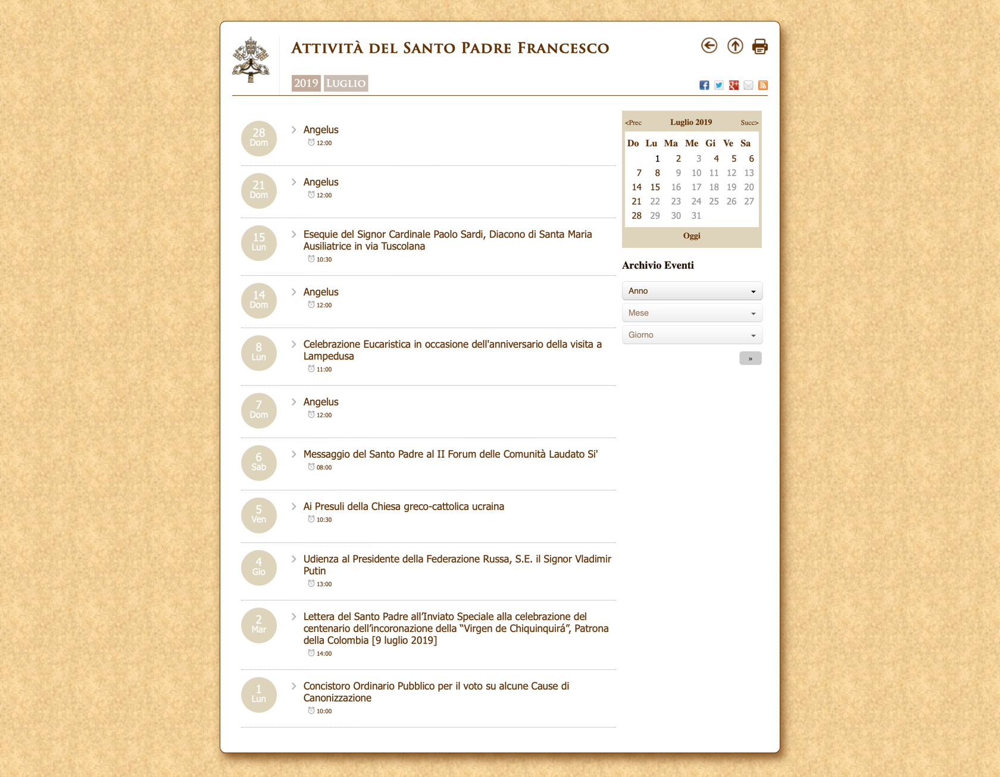

Valutazione di conformità WCAG 2.1 del sito "vatican.va"#
Valutazione di conformità rispetto alle linee guida WCAG 2.1, livello di conformità AA, del sito della Città del Vaticano "vatican.va".
Indice#
Informazioni generali#
Autori#
- Enrico Basso
- Amos Cappellaro
- Luca Dal Poz
Data di stesura del rapporto#
Luglio 2019
Metodo seguito#
Il sito è stato inizialmente navigato per comprenderne la struttura e per individuare le pagine da utilizzare per l'analisi. Successivamente sono stati scelti degli strumenti aggiuntivi da utilizzare a supporto dell'analisi manuale delle pagine. Il lavoro vero e proprio di analisi è stato svolto leggendo ogni linea guida e verificando l'idoneità di ciascuna riportando man mano i risulati e le possibili soluzioni in caso di errore.
Strumenti utilizzati#
Le pagine sono state analizzate tramite tre PC portatili con le seguenti caratteristiche:
- PC 1:
- Schermo LED da 15.6" (risoluzione 1366x768px)
- Processore Intel Core i5 (2 GHz)
- Memoria RAM 8GB
- Sistema operativo Windows 10
- Browser Mozilla Firefox
- Mouse ottico con rotella collegato tramite USB
- Tastiera italiana QWERTY
- Connessione a rete Wi-Fi
- PC 2:
- Schermo LED da 15.6" (risoluzione 1920x1080px)
- Processore Intel Core i7 7700HQ (2.8 GHz)
- Memoria RAM 16GB
- Sistema operativo Windows 10 Home
- Browser Google Chrome
- Mouse ottico con rotella collegato tramite USB
- Tastiera italiana QWERTY
- Connessione a rete Wi-Fi
- PC 3:
- Schermo LED da 13.3” (risoluzione 2560x1600px)
- Processore Intel Core i5 (3,1 GHz)
- Memoria RAM 8GB
- Sistema operativo macOS Mojave (10.14.5)
- Browser Google Chrome
- Trackpad
- Tastiera americana QWERTY
- Connessione a rete Wi-Fi
Gli strumenti utilizzati per aiutarsi nell’analisi sono stati:
- WAVE: tool per controllare l’accessibilità delle pagine web (estensione per Google Chrome e Mozilla Firefox);
- Assistente vocale di Windows 10 "Narrator";
- Assistente vocale di macOS Mojave "Voice Over".
Perimetro dell'indagine#
Dopo un'attenta navigazione nel sito, al fine di analizzarne il modello concettuale, abbiamo concluso come più appropriate le pagine Home, Bollettino e Calendario da sottoporre al test di conformità WCAG 2.1. Non sottoponiamo al test, invece, altre pagine che - seppur rilevanti per l'utenza del sito in analisi - sono raggiungibili dal suddetto sito tramite link, ma appartenenti a siti esterni.
Di seguito gli screenshot delle pagine (catturati il giorno 1 luglio 2019) sottoposte al test di conformità WCAG 2.1:
-
Pagina Home 
-
Pagina Bollettino 
-
Pagina Calendario 